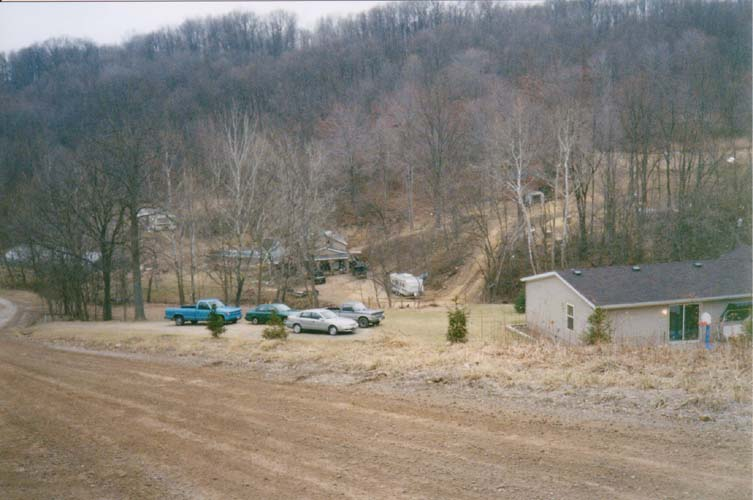
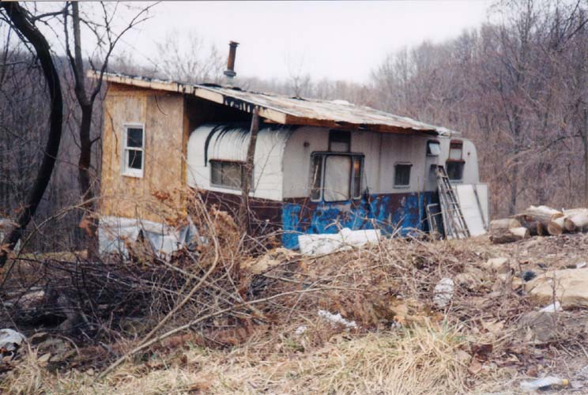

I wish I had more to show you of Knockemstiff, which is possibly Ohio's weirdest-named town. It's located just west of Chillicothe and was reported on in Randy McNutt's book Ghosts, as well as more than one essay I've read in local interest travel guides and history books. The name is just too weird to be believed.
I visited Knockemstiff with my girlfriend and my friend Jesus in early March of 2001. We weren't expecting much, and we didn't find it. Knockemstiff is a true ghost town; there's no main street, no side streets--nothing. It's located roughly near a rural intersection. There's no post office, no store, not even the bar McNutt describes in his book. The people who live there didn't move to Knockemstiff, Ohio; they moved to the country.

A Road in Knockemstiff
How did Knockemstiff get its awesome name? There are a few stories. The most common is that there was a big brawl in the town tavern. Another tells of a woman who asked a preacher how she could get her cheating husband to stay home. "Knockemstiff," the preacher replied. I've always wondered how one thing somebody said one time can become the name of an entire town.
I've gotten information about several hauntings in the Knockemstiff area. They include:
-
Devil's Leap
-
Located behind the old McComis property, these cliffs are haunted by the ghost of a suicide who supposedly leapt from the top when he was haunted by the voice of the devil in his head. You are supposed to be able to hear him scream all the way down.
-
Foggymoore
-
The creepiest story out of Knockemstiff is that of the permanently foggy dip in the road known as Foggymoore. One night a lady and her daughter were driving home and happened upon a man lying in the road on his side with one hand propping up his head, smoking a cigarette. Instead of getting up and moving, the guy simply floated away, still in the lying-down position. Very creepy.
-
Donald's Pond
-
It's not the pond that's haunted so much as the forgotten cemetery behind it, which dates to the 1700's. (Chillicothe was the first capital of the Northwest Territory.) Locals report all sorts of weird occurrences is the old boneyard behind Donald's Pond.
-
Lindy Sue
-
The ghost of a beautiful girl named Lindy Sue is said to wander the hollows of Knockemstiff. Apparently she was parked with her boyfriend Clem Slatterson (some accounts call him Jason) in a buggy on a bridge over Paint Creek when dogs all over the area started howling. Her body was later found on the bridge, strangled. The horse was found a couple of days later by a search party, dead of fright, the buggy smashed, a huge red mark on her neck where whoever--or whatever--killed her got a handhold. Clem was never found. Lindy's ghost haunts the area to this day, but Clem has never been heard from, perhaps because he's embarassed by his name. If you park on their bridge at night, you'll hear Lindy Sue crying out in terror from whatever it was that took her life.

A Typical Knockemstiff House
Mainly because of a word on a map, this little collection of houses has gained some minor notoriety. My friend Hoss remembers that everybody on our high school football team used to talk about wanting to play football in Knockemstiff. Drive down there sometime if you want to be able to say you've been to Knockemstiff, Ohio.
An interesting addendum to the saga of Knockemstiff is the fact that I received no less than three angry e-mails from town residents in the spring of 2002. One person claimed to be the resident of the little trailer with an addition you see pictured above. They were offended by the way their town is represented on my website--specifically in the caption "A Typical Knockemstiff House." Being a poor south side kid myself, I have no room to poke fun at crappy houses, so I do apologize. Please understand that I don't mean any offense to Ross County residents. I'd also like to add that there are many very nice homes in Knockemstiff, and that the country is very pretty and hilly down there.
Back
Sources
Gerrick, David J. Ohio's Ghostly Greats. Dayton: Dayton Press, 1982. pp. 53-54.